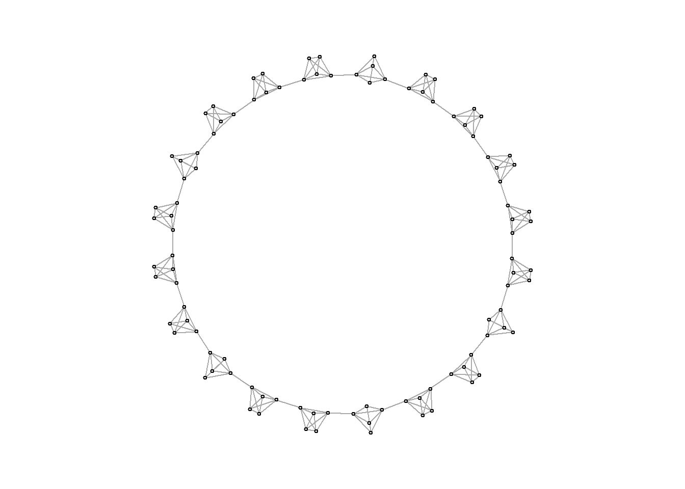
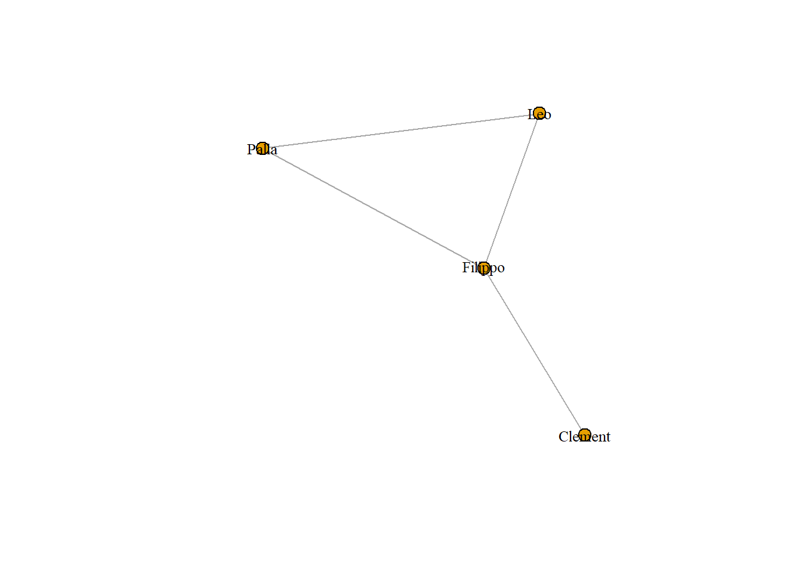
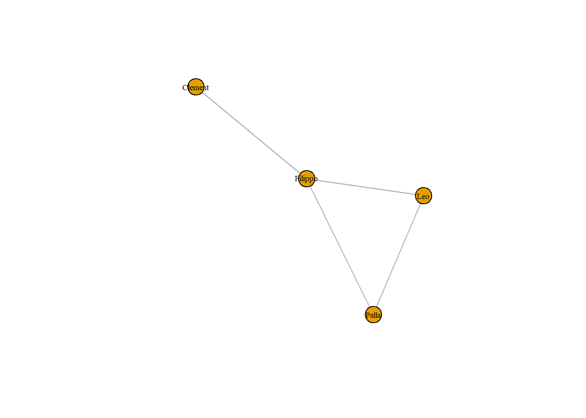
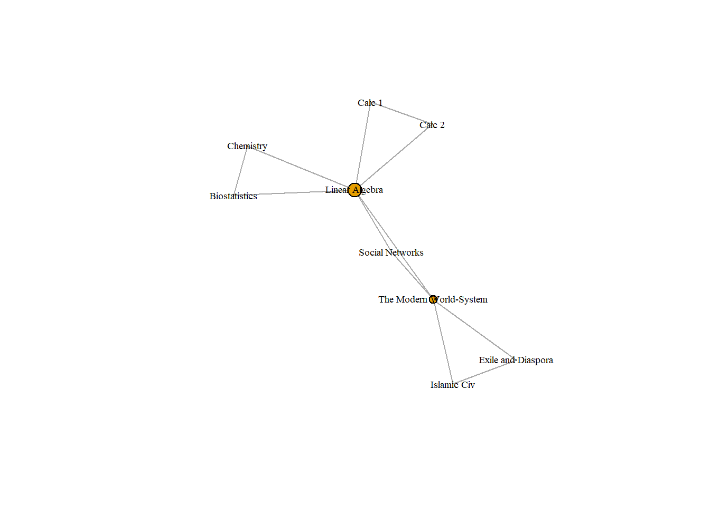

Chapter 5 소속 관계 다루기(Affiliation Data)
이제까지 직접적인 one-mode 네트워크를 다뤘다. 이 장에서는 개인들이 affiliations를 통해 연결된 상황을 살펴본다. 예를 들어, 학생들은 서로 함께 수강한 수업들로 연결될 수 있다. 이러한 네트워크에서는 노드가 두 개의 타입으로 구분된다: 첫 번째 노드 타입은 학생들이고, 두 번째 노드 타입은 수업(classes)이 되겠다. 이 네트워크에서 학생들은 직접적으로 서로에게 연결되는 대신에, 수업 노드에 동시에 연결(co-affiliated)된다. 따라서 모든 연결고리(ties)는 다른 타입의 노드 간에 생성된다.
Two-mode Network(Bipartite Network)
두 가지 종류의 노드가 있고, 한 종류의 노드는 다른 종류의 노드 사이에만 링크를 형성할 수 있는 네트워크
소속을 표현할 때 많이 활용(사람-클럽/단어-문서)
이 네트워크를 표현하는 행렬은 incidence matrix(근접 행렬)라고 부름
B(i,j)가 1이면, j가 i가 속한다는 말/0이면 속하지 않음
two-mode 네트워크를 만들기 위해서는 데이터를 엣지리스트로, 엣지리스트를 다시 행렬로 바꾼 후 igraph 패키지를 사용하여 시각화하면 된다. 실습 데이터는 아래와 같다.
library(igraph)
classes_data <- data.frame(name = c("Leo", "Clement", "Palla", "Filippo"),
class1 = c("Biostatistics","Islamic Civ", "Calc 1", "Linear Algebra"),
class2 = c("Chemistry", "The Modern World-System", "Calc 2", "Social Networks"),
class3 = c("Linear Algebra", "Exile and Diaspora", "Linear Algebra", "The Modern World-System"),
stringsAsFactors = FALSE)
classes_data## name class1 class2 class3
## 1 Leo Biostatistics Chemistry Linear Algebra
## 2 Clement Islamic Civ The Modern World-System Exile and Diaspora
## 3 Palla Calc 1 Calc 2 Linear Algebra
## 4 Filippo Linear Algebra Social Networks The Modern World-System이 데이터프레임을 엣지리스트로 바꾸기 위해서 reshape2 패키지를 설치하고 R에 불러와주자. reshape2 패키지의 melt() 함수는 소위 wide form의 데이터를 long form으로 바꿔준다. classes_data 형태가 현재에는 class1, class2, class3의 변수가 옆으로 나열된 wide form인데, 엣지리스트는 name과 class변수가 아래로 쭉 나열된 long form이다. 따라서 melt()함수를 통해 데이터프레임을 long form으로 변환해주고, 필요한 변수들만 취하면 된다.
# install.packages("reshape2")
library(reshape2)
classes_data <- melt(classes_data, measure.vars = c("class1", "class2","class3"), value.name = "classes", variable.name = "order")
classes_dataorder 변수는 필요 없으니 name과 classes 변수만 선택해서 데이터를 갱신하면 다음과 같다.
classes_data <- subset(classes_data, select = c("name", "classes"))
classes_data## name classes
## 1 Leo Biostatistics
## 2 Clement Islamic Civ
## 3 Palla Calc 1
## 4 Filippo Linear Algebra
## 5 Leo Chemistry
## 6 Clement The Modern World-System
## 7 Palla Calc 2
## 8 Filippo Social Networks
## 9 Leo Linear Algebra
## 10 Clement Exile and Diaspora
## 11 Palla Linear Algebra
## 12 Filippo The Modern World-System이제 데이터가 엣지리스트 형태로 되었다. 학생은 첫 번째 열에, 소속된 수업(affiliation)은 두 번째 열에 나열되어 있다. 소속 관계에 대한 엣지리스트가 완성되었다면, 그 다음은 igraph 객체, 즉 근접행렬로 만들어 주면 된다.
classesMatrix = table(classes_data)
class(classesMatrix) <- "matrix" # And we convert it from a table to a matrix
classesMatrix## classes
## name Biostatistics Calc 1 Calc 2 Chemistry Exile and Diaspora Islamic Civ
## Clement 0 0 0 0 1 1
## Filippo 0 0 0 0 0 0
## Leo 1 0 0 1 0 0
## Palla 0 1 1 0 0 0
## classes
## name Linear Algebra Social Networks The Modern World-System
## Clement 0 0 1
## Filippo 1 1 1
## Leo 1 0 0
## Palla 1 0 0graph.incidence() 함수를 사용하여 근접행렬을 bipartite 네트워크(=two-mode 네트워크)로 바꿔보자.
classesNet <- graph.incidence(classesMatrix, mode = c("all"))
plot(classesNet, vertex.label.cex = .6, vertex.label.color = "black")
노드 타입에 따라 모양을 구분하여 시각화해보자. classesNet 네트워크 노드(vertex)의 특성(attribute) 변수로 shape 변수를 추가하자. 네트워크 노드의 타입은 V()$type으로 확인할 수 있다. 확인해보니 노드 타입이 학생인 경우 FALSE 값을, 수업인 경우 TRUE 값을 갖는다. ifelse()함수를 통해 노드 타입이 학생인 경우에는 동그라미 모양을, 수업인 경우 네모 모양을 갖는 shape 변수를 추가한 후에 다시 그려보자.
V(classesNet)$shape <- ifelse(V(classesNet)$type == FALSE, "circle", "square")
plot(classesNet,
vertex.label.cex = .6,
vertex.label.color = "black")
5.1 원모드 변환(Unipartite Projection)
투모드 네트워크(bipartitie network)는 원모드 네트워크(unipartite network)로 변환될(projected) 수 있다. 이 경우, 두 개의 노드 타입 중에서 하나만이 표시된다. 예를 들어, 동일한 수업을 함께 들었던 학생들끼리 연결되는 원모드 네트워크를 그리거나, 동일한 학생이 여러 개 수업을 들었을 때 이 소속 관계를 공유하는 수업들끼리 연결되는 원모드 네트워크를 그릴 수 있다.
One-mode projection: 이런 투모드 네트워크를 어느 한 종류의 노드 사이의 관계로 전환하는 것
예를 들어 학생-수업 네트워크가 있다고 하면, 학생들의 네트워크/수업들의 네트워크 가능
같은 수업을 들었으면 학생 연결
같은 학생이 수강하면 수업 연결
근접행렬끼리 곱하는 식으로 도출 가능

igraph 패키지의 bipartite.projection() 함수를 사용하거나, 근접행렬에다가 그것의 전치행렬(transpose)을 곱하여 변환 작업을 할 수 있다. 먼저 classesMatrix 근접접행렬에 전치행렬을 곱한 행렬을 만들어보자. 행렬 간 곱할 때에는 %*% 연산자를 사용한다.
personMatrix = classesMatrix %*% t(classesMatrix)
personMatrix## name
## name Clement Filippo Leo Palla
## Clement 3 1 0 0
## Filippo 1 3 1 1
## Leo 0 1 3 1
## Palla 0 1 1 3이 행렬에서 대각성분은 각 학생이 소속된 집단(이 경우 수업)의 개수를 의미한다. 일단 이걸 따로 저장해주고, diag() 함수를 통해 이 행렬의 대각성분을 0으로 만들어주자.
number_of_classes_taken = diag(personMatrix)
diag(personMatrix) <- 0
personMatrix## name
## name Clement Filippo Leo Palla
## Clement 0 1 0 0
## Filippo 1 0 1 1
## Leo 0 1 0 1
## Palla 0 1 1 0이 근접행렬은 학생들 간 같이 들은 수업이 있다면 1, 없다면 0의 값을 갖는다. 시각화해보자.
personNet <- graph.adjacency(personMatrix, mode = "undirected")
plot(personNet, vertex.size = 8, vertex.label.cex = .8, vertex.label.color = "black")
이번에는 그룹(수업) 간 연결이 된 원모드 네트워크를 그려보자. 방법은 간단하다. 근접행렬과 전치행렬끼리 곱해줄 때 그 순서를 바꿔서 곱하면 된다.
groupMatrix = t(classesMatrix) %*% classesMatrix
groupMatrix # The diagonal details the number of people in each class## classes
## classes Biostatistics Calc 1 Calc 2 Chemistry
## Biostatistics 1 0 0 1
## Calc 1 0 1 1 0
## Calc 2 0 1 1 0
## Chemistry 1 0 0 1
## Exile and Diaspora 0 0 0 0
## Islamic Civ 0 0 0 0
## Linear Algebra 1 1 1 1
## Social Networks 0 0 0 0
## The Modern World-System 0 0 0 0
## classes
## classes Exile and Diaspora Islamic Civ Linear Algebra
## Biostatistics 0 0 1
## Calc 1 0 0 1
## Calc 2 0 0 1
## Chemistry 0 0 1
## Exile and Diaspora 1 1 0
## Islamic Civ 1 1 0
## Linear Algebra 0 0 3
## Social Networks 0 0 1
## The Modern World-System 1 1 1
## classes
## classes Social Networks The Modern World-System
## Biostatistics 0 0
## Calc 1 0 0
## Calc 2 0 0
## Chemistry 0 0
## Exile and Diaspora 0 1
## Islamic Civ 0 1
## Linear Algebra 1 1
## Social Networks 1 1
## The Modern World-System 1 2마찬가지로 대각성분은 따로 저장해주고, 근접행렬의 대각성분을 0으로 바꿔준다.
number_of_students <- diag(groupMatrix)
diag(groupMatrix) <- 0 # we again set it to 0이제 네트워크를 그려보자.
personNet <- graph.adjacency(personMatrix, mode = "undirected")
groupNet <- graph.adjacency(groupMatrix, mode = "undirected")
plot(personNet, vertex.label.cex = .6, vertex.label.color = "black")
plot(groupNet, vertex.size = betweenness(groupNet)/max(betweenness(groupNet)) * 10, vertex.label.cex = .6, vertex.label.color = "black")
이렇게 투모드 네트워크를 원모드 네트워크로 변환한 후에 노드 타입이 하나일 때 했던 것처럼 다양한 네트워크 분석 기법을 적용할 수 있다.